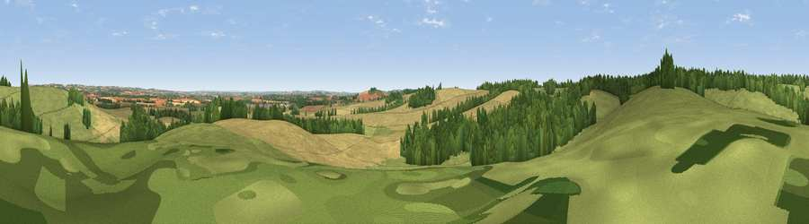

Viewpoint near Shipton Bellinger
#18308 in England · top 22% of its area beats it · near Shipton BellingerWhere it is
The exact computed spot (SU 25175 46725). Click the marker for map links.
The view, rendered

A 360° render of this exact spot computed from the terrain model, tree cover and land cover — summer colours, afternoon light, calibrated against photographs of famous viewpoints. Real trees, hedges and buildings will differ in detail.
The panorama
Grey silhouette: terrain skyline in each direction (720 bearings, Earth curvature and refraction included). Dashed green: skyline with trees (+15 m) and buildings (+8 m) as obstacles. Blue strip: how far the ground is visible on each bearing.
Where the view opens
Wedge length = distance to the farthest visible ground on that bearing (vegetation-aware). Rings at 10, 25 and 50 km.
What fills the view
39% cropland · 37% grassland · 23% woodland
Angular shares of the visible panorama (visual magnitude), not map area. Landscape diversity 0.48 (0–1 Shannon).
Key numbers
More beautiful places nearby
The staircase of upgrades: each row has a higher view potential than everything closer. Driving times are estimates from straight-line distance, calibrated against real road routing — check an actual route before setting out.
| Place | Direction | Drive | Score |
|---|---|---|---|
| Viewpoint near Perham Down | NNE · 1 km | ~3 min | 57.1 |
| Viewpoint near Shipton Bellinger | SSW · 2 km | ~4 min | 61.0 |
| Viewpoint near Cholderton | WSW · 6 km | ~12 min | 61.6 |
| Viewpoint near Bulford | SW · 7 km | ~14 min | 70.3 |
| Viewpoint near Oare | NNW · 19 km | ~32 min | 72.9 |
| Martinsell viewpoint | NNW · 19 km | ~32 min | 76.9 |
| Viewpoint near Berwick St John | SW · 42 km | ~61 min | 78.2 |
| Viewpoint near Buriton | ESE · 53 km | ~75 min | 80.0 |
51.21917, -1.64092 · source: screening · position refined by local search. Computed location — check access rights before visiting.